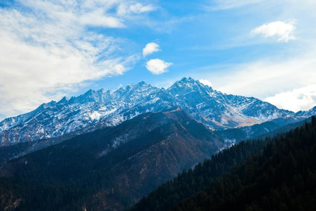
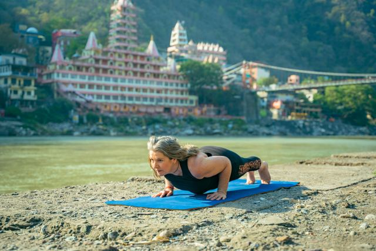
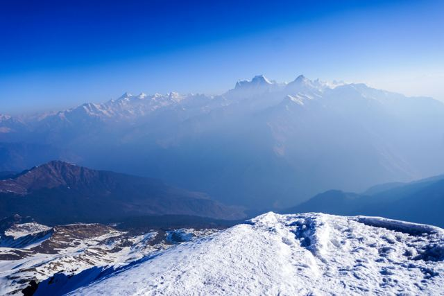
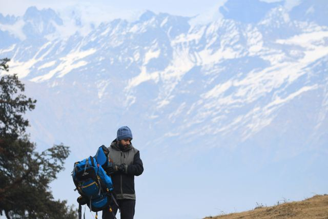

Welcome to Uttarakhand
The Land of Gods
Practical guides to destinations, treks, itineraries and the Char Dham, built to plan a realistic Himalayan trip.
Explore DestinationsDiscover Uttarakhand
Nestled in the lap of the Himalayas, Uttarakhand is known as Devbhumi, the Land of Gods. Garhwal in the west holds the Char Dham shrines, Rishikesh and Haridwar; Kumaon in the east has lakes, hill towns and remote valleys.
This site has guides to 37 destinations, 11 treks and 27 day-by-day itineraries, from one-day trips out of Dehradun to the full Char Dham yatra. Each guide covers how to get there, where to stay, the best season and the safety points worth knowing before you go.
Start with a region, a trek or a ready-made itinerary, check the best month to go, and use the planner to estimate your costs.
Open the Trip Planner
Plan Your Trip
Popular Destinations
Garhwal All Garhwal places
Rishikesh
Yoga capital on the Ganga and gateway to the Char Dham routes
Mussoorie
Queen of the Hills, a colonial-era hill station above the Doon valley
Auli
Himalayan ski slope with views of Nanda Devi and neighbouring peaks
Chopta and Tungnath
Forest meadows and the highest Shiva temple, with an easy short trek
Valley of Flowers and Hemkund Sahib
UNESCO World Heritage alpine valley, and the Sikh shrine of Hemkund Sahib
Kedarnath
Shiva shrine in the Mandakini valley, reached by a long uphill walk or by helicopter
Kumaon All Kumaon places
Nainital
Lake town around the pear-shaped Naini Lake
Jim Corbett National Park
India's oldest national park, famous for tigers and elephants
Almora
Cultural town of Kumaon, known for sweets, temples and Himalayan views
Kausani
Ridge village with wide views of the Himalayan peaks
Munsiyari
Remote hill town facing the Panchachuli peaks, base for Johar valley treks
Binsar
Wildlife sanctuary and ridge with oak and rhododendron forest
Popular Treks
Kedarkantha
A popular winter trek in the Govind Pashu Vihar area with pine forest, a frozen lake and a summit with wide views.
Valley of Flowers and Hemkund Trek
A trek to a protected alpine valley known for its flowers, with an optional climb to Hemkund Sahib.
Chopta-Tungnath-Chandrashila
A short trek to the Tungnath temple and on to the Chandrashila summit.
Brahmatal
A winter trek in the Kumaon-Garhwal border area with frozen lakes, Mount Trishul views and an oak forest.
Dayara Bugyal
A high meadow trek above Uttarkashi with broad open slopes and views of the Bandarpoonch and Gangotri ranges.
Har Ki Dun
A valley trek through the Supin river valley with traditional villages, forest and views at the head of a glacial valley.
When to Go
- Family holidays: March-June and September-November. Try Mussoorie, Nainital, Haridwar, Jim Corbett National Park.
- Snow trips: December-February. Try Auli, Chopta and Tungnath, Dhanaulti, Mukteshwar.
- Trekking: April-June and September-November; winter treks December-March. Try Chopta and Tungnath, Valley of Flowers and Hemkund Sahib.
- Spiritual travel: May-June and September-October for Char Dham; year-round for Haridwar and Rishikesh. Try Haridwar, Rishikesh, Kedarnath, Badrinath.
- Photography: October-February for clear Himalayan views. Try Kausani, Munsiyari, Chopta and Tungnath.
- Peaceful retreats: March-June and September-November, weekdays. Try Khirsu and Pauri, Kanatal, Chaukori, Binsar.
- Adventure activities: Rafting roughly late September to June (dates set locally, and stopped when rivers are high); skiing at Auli January-March, snow permitting. Try Rishikesh, Auli, Bhimtal and Naukuchiatal.
- Budget travel: Off-season weekdays; avoid May-June and holidays. Try Almora, Ranikhet, Rishikesh, Haridwar.
These are typical seasonal patterns, not forecasts. For current weather use the India Meteorological Department and local advisories. Temperatures are described in general terms; no figures are quoted. See the month-by-month calendar.
Travel Guides
Start Here


